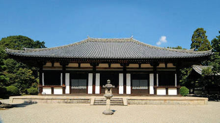

｢秋篠寺｣の草創は,光仁天皇の勅願とか秋篠氏の氏寺であったなどと言われていて、はっきりしないところが神秘的で、秋篠寺にふさわしいような気がします。
宗派は当初の法相宗から現在は単立宗となっております。
｢東塔・西塔｣などを備えた伽藍規模と｢脱活乾漆像｣の尊像が多く安置されていたところからも官寺並みの大寺院秋篠寺でしたが、平安時代に兵火による悲惨な災難を被り、伽藍の大半を失い、創建当時の大寺の面影は残念ながら今は偲ぶことができず静かな佇まいの寺院となっております。
｢脱活乾漆造｣の脱活とは像が｢張子の虎｣のように空洞と言う意味です。尊像の素材が漆だけにひび割れでもすれば恐れ多いことなのでそのため高純度の漆を使用しなければなりません。当時、漆は金と同価格という大変贅沢な素材でその漆を使用する｢脱活乾漆像｣の制作が行われたことは大寺の証といえましょう。
礼宮さまは，平成２年のご結婚式後、陛下から歴史ある皇室ゆかりの地名に因んだ｢秋篠宮｣の宮号を賜りました。その当時、妃殿下である｢紀子さま｣の横顔が、｢伎芸天像(ぎげいてんぞう)｣に似ておられるという評判が起こり、多くの人が伎芸天を拝観すべく秋篠寺に観光バスなどで訪れました。また、昨年(2006)には、秋篠宮家の長男、悠仁(ひさひと)さまが誕生されます慶事がありお寺は賑わいましたが今は静寂な境内で感動を覚えるお寺に戻っております。
秋篠寺といえば伎芸天で、美しい魅力尽きない伎芸天像に憧れてわざわざ大和まで来られる女性が引きも切れないことは異例です。特にキャリアーウーマンには絶大な人気を誇っております。

森の中の寺院だけにスポットライトをあびるような｢本堂｣です。装飾もなく簡素で古都の名刹寺院にふさわしい安定感のある優美な姿です。
本堂は鎌倉時代に、天平時代の｢金堂｣の北側に位置した｢講堂｣の跡地に建築されました。ただ、｢講堂｣の礎石を利用せずに新築されております。何故かと言いますと天
平時代の講堂の礎石であるならば｢柱間｣が等寸になる筈が、現在の本堂は中央の三間が等寸で脇間(端の間)が狭くなっているからです。
鎌倉時代の再建であれば入母屋造の筈ですが天平時代の金堂様式の寄棟造を踏襲しております。周囲のどこから眺めても趣があるように正方形に近い建物になっております。
周囲には縁ではなく基壇が回っております。堂内は板敷きの床ではなく土間であり鎌倉時代の再建でありますが天平時代の建築様式に則っております。
それと、鎌倉時代の建築様式であるならば、野屋根構造で屋根勾配が急になりますが、本堂は天平時代の軽快な優しい屋根勾配になっております。建物で最初に目に入るのは屋根だけに、素朴な本堂を一層引き立てております。
また、鎌倉時代の建築意匠であるならば扉が｢外開き｣になるに対して、天平意匠の｢内開き｣になっております。
{kind=link}